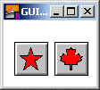

GUI.CreatePictureButton (x, y, picture : int, actionProc : procedure x ()) : int GUI.CreatePictureButtonFull (x, y, picture : int, shortcut : char, mergePic : boolean) : int
Creates a picture button and returns the button's widget ID. Picture buttons behave like buttons (see GUI.CreateButton) except that instead of text on the button, a picture specified by the user is displayed on the button. The picture button widget responds to mouse clicks and keystrokes in the same manner as a regular button widget. The picture must be created by the program beforehand using Pic.New or Pic.FileNew. The resulting picture can then be used as a parameter to GUI.CreatePictureButton. In general, pictures should be a maximum of about 50 pixels high and wide, although there is no built-in limit in the GUI library. The x and y parameters specify the lower-left corner of the picture button. The picture parameter specifies the picture ID of the picture to be displayed on the button. (Note that, in general, this picture should be fairly small.) The picture ID is received from a Pic.New or Pic.FileNew call. Do not call Pic.Free for this picture ID until the button has been disposed of by calling GUI.Dispose. The actionProc parameter specifies the name of a procedure that is called when the picture button is pressed. For GUI.CreatePictureButtonFull, the width and height parameters specify the width and height of the button. If they are set to 0, then the picture radio button is automatically sized to fit the picture. If you need to know the precise size of the button, use the GUI.GetWidth and GUI.GetHeight functions. If width and height are larger than the picture, the picture is centered in the button. The shortCut_parameter is the keystroke to be used as the button's shortcut. The mergePic parameter specifies whether anything that was the background colour in the picture (usually colour 0) should be set to the background colour of the button (which is usually gray). This defaults to true for CreatePictureButton_.

The following program displays five picture buttons which output a message when pressed.
import GUI
View.Set ("graphics:100;70")
const size : int := 25 % The buttons size.
const border : int := 3
var starButton, mapleButton, starPic, mapleLeafPic : int
procedure StarPressed
Text.Locate (1, 1)
put "Star Pressed "
end StarPressed
procedure MaplePressed
Text.Locate (1, 1)
put "Maple Pressed "
end MaplePressed
% Create the pictures.
% The star.
Draw.Star (border, border, border + size, border + size, black)
Draw.Star (border + 1, border + 1, border + size - 1,
border + size - 1, black)
Draw.FillStar (border + 2, border + 2, border + size - 2,
border + size - 2, brightred)
starPic := Pic.New (0, 0, 2 * border + size, 2 * border + size)
% The mapleleaf.
Draw.FillBox (border, border, border + size, border + size, white)
Draw.MapleLeaf (border, border, border + size, border + size, black)
Draw.MapleLeaf (border + 1, border + 1, border + size - 1,
border + size - 1, black)
Draw.FillMapleLeaf (border + 2, border + 2, border + size - 2,
border + size - 2, brightred)
mapleLeafPic := Pic.New (0, 0, 2 * border + size, 2 * border + size)
% Create the picture buttons.
Draw.Cls
starButton := GUI.CreatePictureButton (10, 10, starPic, StarPressed)
mapleButton := GUI.CreatePictureButton (55, 10, mapleLeafPic,
MaplePressed)
loop
exit when GUI.ProcessEvent
end loop
When GUI.CreatePictureButton or GUI.CreatePictureButtonFull is called, the newly created picture will be displayed immediately unless GUI.DisplayWhenCreated has been called with the display parameter set to false. When a picture button is not enabled, the picture button is grayed out and the picture button no longer responds to any mouse clicks or keystrokes until the button is enabled again.
The following GUI subprograms can be called with a picture button as the widgetID parameter:
Exported qualified. This means that you can only call the function by calling GUI.CreatePictureButton, not by calling CreatePictureButton.